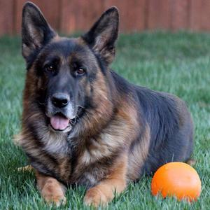

About Me
Imported from Holland, Randy was bred by one of the top kennels in Austria, Leithawald. Sired by Austrian Sieger VA1 Yoker vom Leithawald, a son of two-time World Sieger VA1 Vegas du Haut Mansard. Randy's mother is V Ubi vom Leithawald, a top producing daughter of the great sire V6 (BSZS) Idol vom Holtkämper Hof and a granddaughter of VA1 Bax von der Luisenstraße.